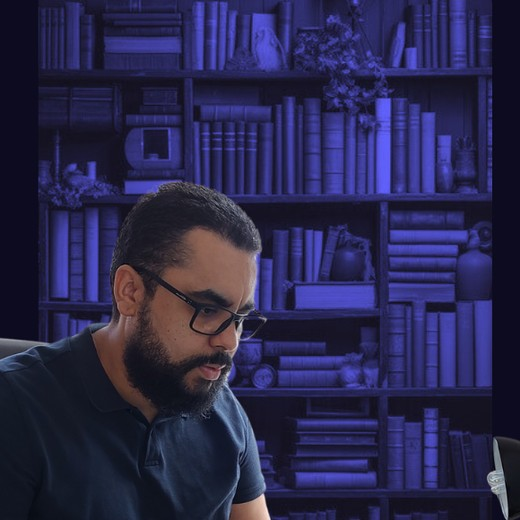
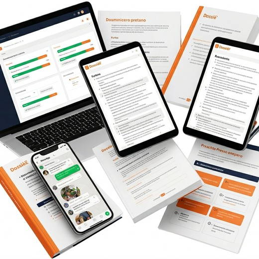

@dissecandoquestoes
Prof. Manoel Machado · Instituto Federal
Professor, sua vaga no IF não é de quem estuda mais — é de quem tem método. Comece por aqui.
Grupo gratuito no WhatsApp
Grupo de Novidades IF
Vagas, editais e movimentações da Rede Federal em primeira mão.
Aula ao vivo · Gratuita
Participe da próxima Aula IF
O panorama das vagas e o método de quem conquista a estabilidade no IF.

A preparação mais completa
Conheça o Dossiê IF
Plataforma, cronograma que se adapta à sua rotina e acompanhamento do Prof. Manoel.

Atendimento no WhatsApp
Fale com o nosso time
Tire suas dúvidas e descubra o melhor caminho pra sua jornada no IF.